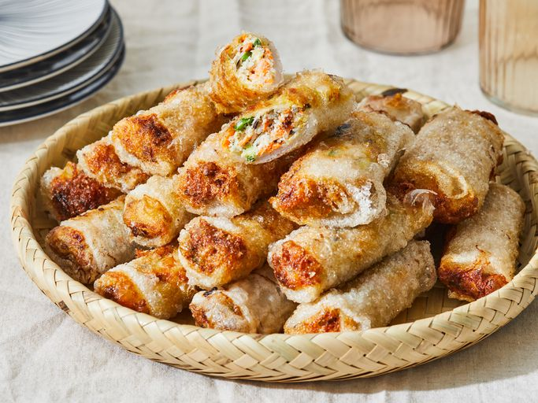

Vietnamese Spring Rolls Recipe

Perfect Food For Any Season
These Vietnamese fried spring rolls are a recipe I learned while traveling through Vietnam. The ingredients are relatively simple and easy to find in any grocery store. I've cooked this several times since returning, and it's always been a hit. They taste great with dipping sauce.
Ingredients
- 2 ounces dried thin rice noodles
- ¾ cup ground chicken
- ¼ cup shrimp - washed, peeled, and cut into small pieces
- 2 large eggs, beaten
- 1 carrot, grated
- 4 wood fungus mushrooms, chopped
- 2 green onions, chopped
- ½ teaspoon white sugar
- ½ teaspoon salt
- ½ teaspoon ground black pepper
- 24 rice paper wrappers
- 2 cups vegetable oil for frying
Directions
- Gather all ingredients.
- Soak rice noodles in cold water until soft, about 20 minutes. Drain well; cut into 2-inch long pieces.
- Combine noodle pieces, chicken, shrimp, eggs, carrot, wood fungus mushrooms, and green onions in a large bowl. Add sugar, salt, and black pepper; stir well.
- Soak 1 rice paper wrapper in a shallow bowl of warm water to soften, about 15 seconds. Place on a damp cloth laid out on a flat surface.
- Place 1 tablespoon filling mixture into the center of softened rice paper. Fold the bottom edge into the center, covering filling. Fold in opposing edges and roll up tightly. Repeat with remaining rice paper wrappers, soaking and filling each one individually.
- Heat oil in a wok or large skillet over medium heat.
- Working in batches of 3 or 4, fry spring rolls in hot oil until crisp and golden brown on both sides, about 5 minutes. Drain on paper towels.